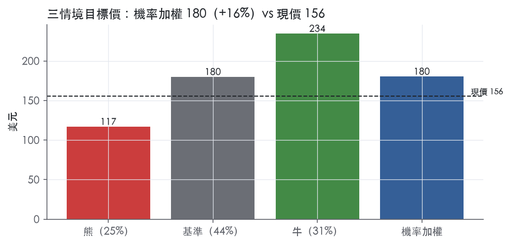
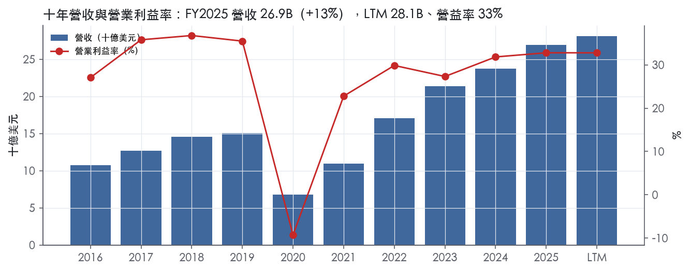
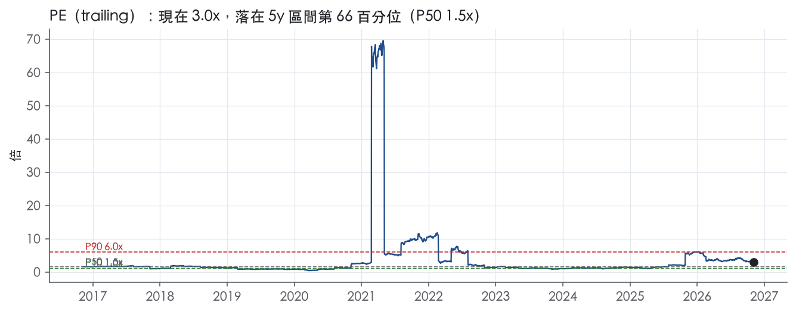
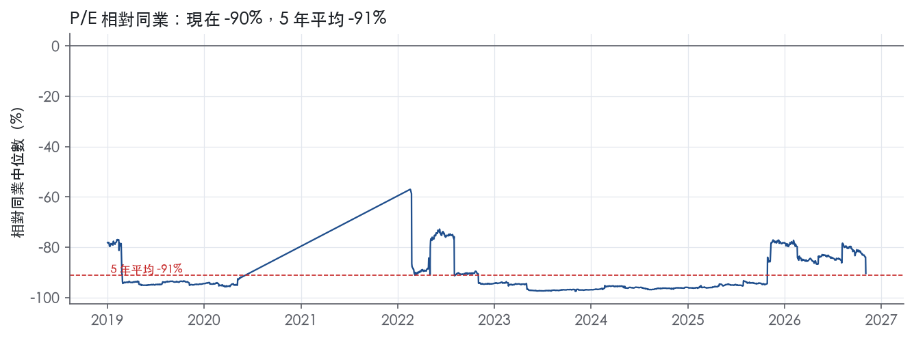
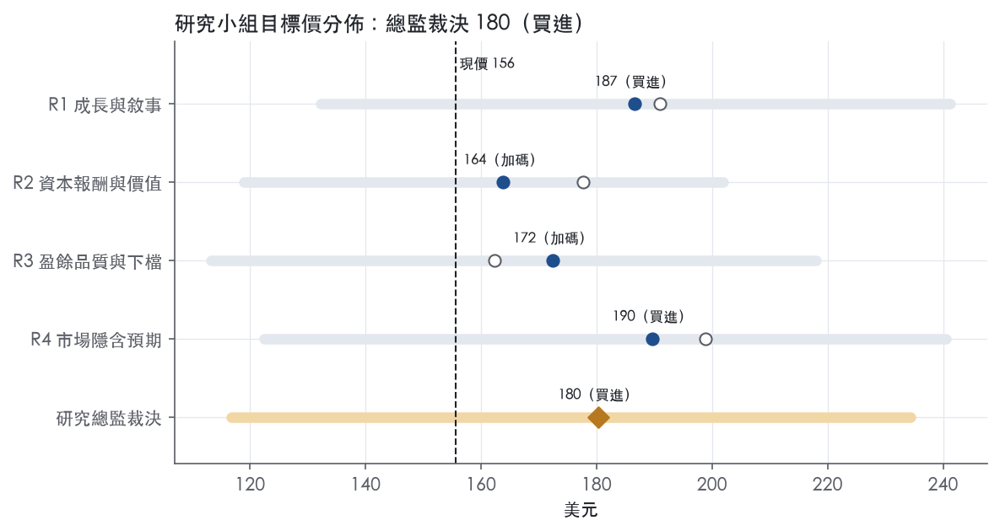
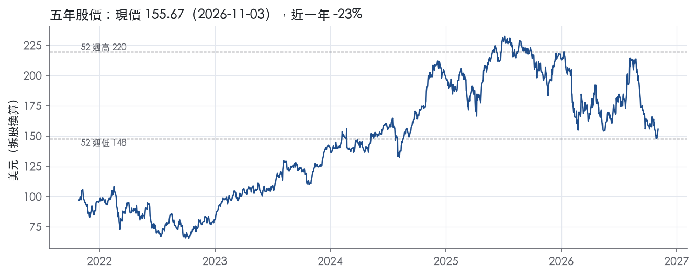

評等總表 › 非必需消費 › BKNG
倍數持平、盈餘推動，看多幅度收斂｜評等 買進｜目標價 180
| 報告日 | 評等 | 目標價 | 當時股價 | 超額報酬 |
|---|---|---|---|---|
| 2026-11-03 | 買進 | 180 | 156 | +19.3% |
| 2026-10-09 | 買進 | 190 | 160 | +21.3% |
| 快評 | 動作 | 結論 |
|---|---|---|
| 2026-11-03 | 提前重開研究小組 | 營收低於預測，Q4指引急降，提前重開 |
| 評等 | 買進 |
| 12 個月目標價 | 180 美元 |
| 現價 | 155.67 美元（2026-11-03） |
| 預期報酬 | 股價 +15.8%＋股息 13.5%＝總報酬 +29.2%；同業籃門檻 9.9%，超額 +19.3% |
| 估值方法 | P/E 16.0x，套在第 5–8 季的EPS（也就是一年後的未來四季） |
| 三情境 | 熊 117／基準 180／牛 234 |
| 研究流程 | 四位研究員兩輪辯論＋研究總監裁決 |
| 資料來源 | SEC EDGAR XBRL、Tiingo、FRED（全免費） |
倍數持平、盈餘推動，看多幅度收斂（研究總監裁決，四位研究員兩輪辯論後）
評等 買進｜12 個月目標價 180 美元（總監三情境機率加權 181 與研究員中位數 179 各半）｜現價 155.67（2026-11-03）
預期報酬：股價 +15.8%＋股息 13.5%＝總報酬 +29.2%。同業籃門檻 9.9%，超額 +19.3%。
估值方法：P/E 16.0x，套在第 5–8 季的EPS（也就是一年後的未來四季）。三情境：熊 117（25%）／基準 180（44%）／牛 234（31%）。
什麼會讓研究總監改變看法：Q4 2026 房晚年增低於 1%、或 10-Q 附註 13 揭露 FTC 帶持續性抽成限制，轉中性並以熊路徑為基準；EXPE P/E 向 25.0x 回升且 2027Q1 房晚 ≥4%，倍數上調到 17x 以上。
| 過去四季（實際，FY2026Q3） | 未來四季 | 第 5–8 季 | 第 9–12 季 | |
|---|---|---|---|---|
| 營收（B） | 28.1B | 30.2B | 32.4B | 34.5B |
| 營收成長 | 8.0% | 7.5% | 7.0% | 6.5% |
| 營業利益率 | 32.8% | 34.0% | 34.5% | 34.5% |
| EPS（美元） | 51.25 | 9.74 | 11.24 | 12.69 |
| EPS 成長 | 41.5% | -81.0% | 15.4% | 12.9% |
| 每股股息（美元） | 9.64 | 9.64 | 9.64 | 9.64 |
| P/E（現價） | 3.0x | 16.0x | 13.8x | 12.3x |
| 股息殖利率（現價） | 13.5% | 6.2% | 6.2% | 6.2% |
過去四季為申報數字；預測為研究總監的假設、程式計算。倍數與殖利率都用現價計算，用來看現價對應各期獲利的高低。
| 項目 | 上次（2026-10-12） | 這次（2026-11-04） | 變動 |
|---|---|---|---|
| 評等 | 買進 | 買進 | ＝ |
| 機率加權目標價（美元） | 190 | 180 | -5.1% |
| 超額報酬 | 21.3% | 19.3% | -2.0 pp |
| 目標倍數 | 16.2x | 16x | — |
| 未來四季營收成長 | 9.5% | 7.5% | -2.0 pp |
| 未來四季營益率 | 33.3% | 34.0% | +0.7 pp |
| 未來四季 EPS（美元） | 9.84 | 9.74 | -1.0% |
| 熊／基準／牛機率 | 25／48／27 | 25／44／31 | — |
程式計算；「未來四季」各自從當次報告的資料起點算。研究總監逐點說明見第八章「與上次報告比較」。
| 情境 | 機率（歷史） | 故事 | 未來四季營收成長 | 第 5–8 季營益率 | 倍數 | 目標價 | 股價漲跌 |
|---|---|---|---|---|---|---|---|
| 熊 | 25%（22%） | 風險表第 3 條需求轉弱延續到 2027（疊本行下行 GDP 0.3、失業率 5.1）＋第 1 條 FTC 類 discrete item 重演、附註 13 帶持續義務＋第 2 條行銷費率升破 5%；舉債回購減速至 −3%（R3），倍數壓到 13x | 3.0% | 31.5% | 13.0x | 117 | -25.0% |
| 基準 | 44%（46%） | FTC 不重演、Q4 2026 是谷底，本行基準路徑（WTI 88、GDP 1.8）下慢回溫，倍數持平，報酬來自 Q5–Q8 EPS 成長與 −5% 縮股 | 7.5% | 34.5% | 16.0x | 180 | 15.5% |
| 牛 | 31%（32%） | 本行上行路徑（WTI 72、GDP 2.8、美元 119.0）下中東干擾 2027Q1 前消退、國際旅遊回到 Q3 固定匯率約 10% 的速度，650M 節省落地，EXPE 向 25.0x 回升帶動類股重評一半 | 10.0% | 36.0% | 19.0x | 234 | 50.6% |
目標價由程式依研究總監的驅動與倍數計算；機率由研究總監給定。括號內是歷史頻率：把這檔股票過去十年 12 個月報酬的波動形狀，置中在基準情境，結果落在各情境附近的比例。

四位研究員用不同方法各自估值，回應研究總監的質疑後交出第二輪，最後由總監逐點裁決。各研究員的主張見第七章，裁決理由見第八章，完整論證見《研究底稿》。
| 立場（一輪→二輪） | 加權目標價（一輪→二輪） | 評等（一輪→二輪） | 第二輪倍數 | 熊～牛目標價 | |
|---|---|---|---|---|---|
| R1 成長與敘事 | 看多→看多 | 191→187 | 買進→買進 | 19.0x | 132～241 |
| R2 資本報酬與價值 | 中性→中性 | 178→164 | 買進→加碼 | 11.0x | 119～202 |
| R3 盈餘品質與下檔 | 中性→中性 | 162→172 | 加碼→加碼 | 18.0x | 113～218 |
| R4 市場隱含預期 | 看多→看多 | 199→190 | 買進→買進 | 16.0x | 122～241 |
| 研究總監裁決 | 看多 | 180 | 買進 | 16.0x | 117～234 |
目標價由程式依各自的驅動與倍數計算；評等＝機率加權總報酬 − 同業籃門檻。
Booking Holdings 是一家靠五個消費者品牌串接旅客與旅遊服務供應商的線上旅遊預訂平台公司。公司使命是讓每個人都更容易體驗世界，透過客製化的規劃、付款、語言等選項，將消費者與旅遊服務夥伴無縫連結¹。公司營收幾乎全部來自線上旅遊預訂服務，同時也從支付服務、廣告、餐廳訂位與管理服務、旅遊保險等業務取得收入¹。FY2025 營收 26.92B 美元，公司將其分為商戶收入、代理收入、廣告及其他收入三類¹。商戶收入主要來自公司代收旅客款項的交易，大部分來自 Booking.com 的住宿預訂¹；代理收入幾乎全部是 Booking.com 住宿預訂的佣金¹；廣告及其他收入主要來自 KAYAK 的導流與廣告，以及 OpenTable 的訂位服務與訂閱費¹。
公司不按地理或產品線拆分報導分部，而是用五個品牌矩陣覆蓋住宿、地面交通、機票、活動與餐廳五大垂直。Booking.com 是全球最大的線上住宿預訂品牌，按已預訂房晚數計算，總部位於荷蘭，截至 2025 年底提供約 440 萬個房源，涵蓋超過 220 個國家與地區、逾 40 種語言，包含約 50 萬間旅館、汽車旅館與度假村，以及約 390 萬個住宅、公寓等另類住宿¹；2025 年 Booking.com 在超過 55 個市場提供機票服務，並提供當地旅遊活動、租車及地面交通服務¹。Priceline 是北美折扣旅遊預訂的領導者，提供住宿、機票、租車、套裝行程、郵輪、活動與聯盟計畫¹。Agoda 主要服務亞太地區消費者，總部在新加坡，同時提供機票、地面交通與景點門票¹。KAYAK 是元搜尋服務品牌，讓消費者一次比較數百個線上旅遊平台的行程與價格，服務覆蓋逾 60 個國家與地區¹。OpenTable 是線上餐廳訂位的領導品牌，主要在美國提供消費者訂位與餐廳管理服務¹。10-K 未揭露各品牌或各垂直的具體營收占比，僅能從收入性質判斷住宿（商戶＋代理收入）仍是公司營收主體。
公司客戶是全球旅客與旅遊服務供應商兩端，業務布局以歐洲（Booking.com）、北美（Priceline、KAYAK、OpenTable）與亞太（Agoda）三地品牌分工為主。公司業務遍及逾 220 個國家與地區、使用逾 40 種語言¹。截至 2025 年底，公司約有 24,300 名員工，其中約 2,900 人在美國、約 21,400 人在美國以外地區，顯示營運重心在海外¹。通路上，直接通路（公司自有 App／網站）占過去四個季度總房晚數的比重維持在五十幾個百分點、與去年相近²³。公司持續強調在亞洲與美國等關鍵地區提高品牌知名度與本地化作為成長槓桿¹。
過去四季營收與獲利呈現「先穩健成長、後因一次性因素轉負」的走勢。FY2025Q4 營收 6.35B 美元、年增 16.0%。FY2026Q1 營收 5.53B 美元、年增 16.2%，EPS 1.36。FY2026Q2 房晚數年增 5%、Gross Bookings 年增 9%、營收年增 8%至 7.4B 美元，GAAP 淨利年增 118%至 2.0B 美元（主因去年同期有歐元計價債務未實現匯損的高基期），Adjusted EBITDA 年增 9%至 2.6B 美元³；公司同時將 Transformation Program 預期年化節省上調至約 650M 美元，預計於 2027 年底前實現³。FY2026Q3 房晚數年增 7%、Gross Bookings 年增 10%（約 11% 固定匯率），但 GAAP 營收因認列與 FTC 事項相關的 900M 美元營收減項而年減 1%至 8.9B 美元，Adjusted Revenue 則年增 9%；GAAP 淨利年減 1%至 2.7B 美元，Adjusted Net Income 年增 8%，GAAP EPS 年增 7%至 3.61 美元，Adjusted EPS 年增 17%至 4.66 美元，Adjusted EBITDA 年增 9%至 4.6B 美元²。公司並就同一 FTC 事項認列 100M 美元損失準備²。資本回報上，Q3 單季回購 2.1B 美元普通股，季末剩餘授權額度 12.4B 美元（前一季為回購 3.7B 美元、剩餘授權 14.5B 美元），董事會宣布每股 0.42 美元股息²³。對 Q4 與全年指引，公司表示第三季末全球旅遊需求略有放緩，國際旅遊趨勢轉弱而國內旅遊維持韌性，10 月以來中東衝突相關的航班中斷、機票價格上升及歐洲部分城市的局部動盪也影響需求，指引已反映這些近期干擾並假設中東衝突的直接與間接影響持續至年底²；公司預計 Q4 Room Nights 成長 1%–3%、Gross Bookings 成長 2%–4%、Adjusted EBITDA 成長約持平、Adjusted EPS 成長低到中雙位數²。LTM 口徑（LTM@FY2026Q3）營收 28.13B 美元、EBITDA 9.81B 美元、FCF 9.24B 美元。
公司將策略定義為：讓人們更容易規劃、尋找、預訂、付款與體驗旅遊；提供消費者全面選擇與價值；打造創新且有價值的生成式 AI 消費者與夥伴體驗；為夥伴提供平台、工具與洞察以驅動共同成長；並以永續方式經營業務¹。公司持續推進「Connected Trip」願景，目標是提供從 AI 驅動的靈感與規劃到旅途中建議的完整個人化旅程體驗，2025 年機票票數年增 37%、景點門票票數在低基期上年增約 80%¹。公司也強調擴大 Booking.com 的 Genius 忠誠計畫、與領先生成式 AI 組織合作、提升支付平台採用率、擴大另類住宿供給，以及執行 Transformation Program 以創造效率、為策略優先事項的再投資創造空間¹。管理層在最新法說中將業績歸因於「有韌性的旅遊需求與團隊的執行紀律」，並強調持續將 AI 整合進各品牌、發展 AI 原生體驗，同時提醒地緣政治與宏觀經濟的不確定性可能影響短期旅遊趨勢²。公司成長引擎本質上是「流量與供給兩端的規模效應疊加 AI 與支付滲透率提升」，Transformation Program 的降本空間（650M 美元年化）則是在營收成長放緩時維持利潤率的緩衝器。中東地緣政治干擾與 FTC 事項的一次性費用是近期能見度最低的變數，值得在估值模型中單獨處理而非外推趨勢。整體而言，Booking.com 仍是集團的核心引擎，其他四品牌扮演互補流量與區域／垂直補強的角色。

Booking Holdings 的護城河評為「窄」，趨勢「穩定」。我們有把握未來 5 年以上 ROIC 仍高於資本成本，但沒有把握撐到 10 年以上，所以不給「寬」。理由有三：雙邊網路效應真實存在，但用戶和夥伴都能同時掛在多個平台；生成式 AI 正在壓低新進者的門檻；資料包裡的 ROIC 序列已經失真，無法用數字證明「長期」。
優勢來源是「網路效應」為主、「無形資產（品牌）」為輔，兩者都有原文佐證。
網路效應：住宿供給量和多語系覆蓋，讓旅客端與供應商端互相吸引，形成雙邊市場。原文寫明，Booking.com 截至 2025 年底提供約 4.4 million 個房源，分布在超過 220 個國家與地區、使用超過 40 種語言¹。原文也指出，Booking.com 是按已預訂房晚數計算的全球最大線上住宿預訂品牌¹。供應商端的黏性來自通路價值：夥伴能把庫存賣進原本因語言或支付限制而觸及不到的市場與消費者¹。Genius 忠誠計畫正擴展到各垂直，Connected Trip 則把機票、景點併入同一平台，兩者都在加厚網路效應。原文舉的例子是 2025 年機票票數年增 37%，景點門票在低基期上年增約 80%¹。
無形資產（品牌）：公司建立了廣泛使用、高辨識度的電商品牌，但這些品牌靠行銷活動與績效行銷支出撐起來¹。公司持續投入行銷與品牌建設，以維持並提升消費者對品牌的認知¹。品牌優勢需要持續付費購買流量，屬於「要繳租金的護城河」，強度不如專利或授權這類法定壁壘。
轉換成本、成本優勢、效率規模三類都不列入，因為原文找不到消費者或供應商被鎖定的具體證據。
利潤率數字支持「有護城河」，但 ROIC 序列失真，無法用來證明「寬」，這是下修到「窄」的量化理由之一。
利潤率：營業利益率十年平均 27.0%、標準差 12.8%，最低 -9.3%、最高 36.8%。最低值出在 FY2020，是疫情導致營收年減 54.9%造成的外生衝擊，不是競爭侵蝕。除了 FY2020，其他年度營益率落在 22.8%到 36.8%之間。最新 FY2025 為 32.8%，高於十年平均。FCF 利潤率最新 33.8%、十年平均 28.9%、標準差 11.2%。FY2025 資本支出占營收 1.2%，輕資產模式把利潤幾乎全數轉成現金。
ROIC：ROIC 有資料的 9 年中，有 6 年高於 9.9% 的資本成本代理值；十年平均減資本成本為 29.4%。疫情前三年的 ROIC 分別為 24.2%、37.1%、50.1%，都明顯高於資本成本。之後的序列失真：FY2023 為 560.9%，FY2024 為 -252.4%，FY2025 為 -182.9%，標準差 213.9%。
衝突在這裡：同一期間營益率維持在三成以上，淨利也為正，負 ROIC 不可能來自虧損。比較合理的解釋是大量回購讓投入資本分母轉為負值或趨近零，ROE 最新 -112.6%也指向同一方向。所以「6 年高於資本成本」和「平均 39.3%」都不能直接拿來當寬護城河的證據；能確認的只有疫情前的 ROIC 加上利潤率的韌性，這正好落在「窄」的證據強度。
最大的侵蝕力量是 AI 降低新進門檻，加上科技巨頭的流量優勢，其次是監管壓縮平台的定價能力。
原文自承市場競爭激烈且持續變化，競爭產品能以相對低的成本推出，而生成式 AI 讓創新速度加快、成本下降¹。現有與潛在競爭者包括全球最大的科技公司，它們擁有遠多於公司的消費者、消費者數據與資源¹。競爭者名單也明列提供生成式 AI 助理與代理的公司，以及飯店、航空公司等旅遊服務供應商本身¹。如果 AI 代理成為旅客的搜尋入口，Booking 的流量會從「自然流入」變成「向代理付費取得」，網路效應的經濟價值會被入口方分走。
監管面，歐盟已依《數位市場法》把公司指定為守門人，並依《數位服務法》把 Booking.com 指定為超大型線上平台，公司因此受到新的要求與審查¹。守門人身分會限制平台對供應商的條款設計，直接削弱網路效應帶來的議價力。業務概況章提到的 FTC 事項營收減項，是美國端監管成本開始落地的訊號，需要追蹤是否演變成持續性的條款限制。
目標倍數相對同業可以給溢價，但溢價應該只維持在 5 年左右的明確預測期內，終值期要回到同業水準；不建議在永續成長期假設超額報酬持續。支撐溢價的理由是穩定的三成以上營益率，以及 1.2% 營收占比的資本支出；限制溢價的理由是 AI 與監管讓 10 年以上的能見度不足。另外，資料包的倍數帶有明顯的每股基準異常：目前 P/E 3.0x，5 年中位數僅 1.5x，不應用來判斷歷史溢價或折價，請改用同業橫向比較。
| 指標 | 最新 | 十年平均 | 標準差 | 最低 | 最高 |
|---|---|---|---|---|---|
| ROIC | -182.9% | 39.3% | 213.9% | -252.4% | 560.9% |
| 營業利益率 | 32.8% | 27.0% | 12.8% | -9.3% | 36.8% |
| FCF 利潤率 | 33.8% | 28.9% | 11.2% | -3.0% | 36.2% |
| ROE | -112.6% | 2500.6% | 7097.3% | -173.9% | 22573.7% |
程式計算。資本成本代理值（10 年債＋5%）：9.9%；ROIC 平均減資本成本：29.4%；ROIC 有資料的 9 年中，高於資本成本 6 年。
LTM 營業現金流／淨利 1.33x、自由現金流／淨利 1.29x，近三年平均分別 1.62x、1.55x，十年平均 1.71x、1.12x，全部綠燈。應計比率 LTM -8.2%、近三年 -11.9%、十年 -8.1%，持續為負，代表盈餘其實比應計項目顯示的還保守，不是靠應計堆出來的。但要注意單季波動：FY2026Q3 營業現金流僅 1.14B，年增為負（資料包），主因是遞延商戶訂房款（deferred merchant bookings）與其他流動負債的季節性變動，這是 Booking 商業模式（代收代付、check-in 遞延認列）的正常現象，不是品質惡化。九個月累計口徑營業現金流 8,071M 對 2025 同期 7,919M 仍是成長的（抄自8-K現金流量表）²。
本季新聞稿認列 FTC 事項造成營收減少 900M、並提列損失 100M，兩項均排除在調整後營收、調整後淨利與調整後EBITDA之外²。GAAP 淨利 2,717M 年減1%，調整後淨利年增8%，調整後EPS年增17%（GAAP EPS僅年增7%），差距主要來自FTC排除項與貨幣／商譽減損等非核心項目²。九個月累計的現金流量表調節項目中，可觀的非現金項目包括：股權酬勞（SBC）427M、折舊攤銷443M、預期信用損失及退款準備340M、未實現歐元計價債務外幣損益（gains）-655M、以及2025年同期的商譽與無形資產減損457M及可轉債公允價值變動360M（均抄自現金流量表）²。我認為FTC的900M營收扣減與100M損失是真實的一次性法律成本，應計入評估基期但不代表未來常態盈餘能力；SBC與D&A則是真實的經濟成本，不應像公司非GAAP口徑一樣完全排除。歐元計價債務的匯兌損益（655M收益）屬於會計上非現金的重估利得，對經濟現金流無影響，是典型的「口徑差異」而非盈餘品質問題。
淨負債／EBITDA 僅0.43x（LTM）、近三年平均0.15x，遠低於2.00x警戒線，槓桿不是限制因子。利息保障倍數LTM 8.28x、十年平均10.8x，付息能力穩健。資本配置極度積極：（股利＋回購）／淨利LTM達185.3%，十年平均339.7%，代表公司持續用超過當期盈餘的現金回饋股東，資金來源是帳上現金與舉債，不是盈餘不足的掩飾。本季實際回購2.1B（不含excise tax），剩餘授權12.4B，並宣布每股0.42美元股利（抄自新聞稿）²。九個月累計回購股份付款達9,900M，遠高於同期淨利5,750M，並透過新發債2,975M部分支應（抄自現金流量表）²。這直接導致資產負債表上股東權益為負：總股東權益（赤字）為-10,407M（2026/9/30）對上-5,578M（2025/12/31），主因庫藏股累計達-64,249M（抄自資產負債表）²。股東權益為負是大規模回購造成的會計現象，不影響清償能力，但確實限制用淨值衡量公司（如ROE失真），且稀釋股數年變動為-2.2%（LTM）、近三年-6.6%，顯示回購持續有效減少股數而非僅抵銷SBC稀釋。
程式紅旗：淨利率FY2019→FY2020跳動-31個百分點。此為2020年COVID疫情導致全球旅遊停滯，當年營收由15.07B驟降至6.80B（-54.9%），營益率轉負至-9.3%（資料包年度表），屬於宏觀環境造成的一次性外部衝擊，不是公司治理或會計操縱問題，且2021年後營收與利潤率已完全恢復並持續成長至FY2025營收26.92B、營益率32.8%（資料包）。這條紅旗可解釋、非真實盈餘品質隱憂。
計分表全部為綠燈，無其他程式標示的紅旗。但我額外觀察兩點值得在紅旗框架外提示：（1）FY2023、FY2024、FY2025 ROIC分別為560.9%、-252.4%、-182.9%（資料包），數字劇烈異常波動，很可能是分母（投入資本）接近零或為負所致的計算假象，而非真實回報率，使用時應忽略絕對值僅看方向；（2）本季FTC 900M營收扣減與100M損失雖為一次性，但顯示公司在監管環境（如DMA、DSA相關風險，見10-K風險因子）下持續有法律／監管成本發生的可能性，估值時應預留一定monitoring buffer而非視為單次不再重演。
盈餘品質整體偏向可信，估值應以GAAP數字為主幹，但對FTC的900M營收扣減與100M損失可視為真正一次性項目予以剔除後評估核心盈餘能力，SBC與D&A則不應加回。槓桿極低（淨負債/EBITDA 0.43x）不構成倍數壓縮理由，但負股東權益與持續超額回購意味著估值應聚焦EV/EBITDA、FCF殖利率等不受帳面淨值失真影響的指標，而非P/B或ROE。整體不需要對盈餘打折，現金轉換持續優於1倍是支持直接使用GAAP盈餘估值的依據。
| 項目 | LTM | 近三年 | 十年 | 燈號 | 規則 |
|---|---|---|---|---|---|
| 營業現金流／淨利 | 1.33x | 1.62x | 1.71x | 綠 | ≥1.00x 綠、<0.80x 紅 |
| 自由現金流／淨利 | 1.29x | 1.55x | 1.12x | 綠 | ≥0.90x 綠、<0.60x 紅 |
| 應計比率（(淨利−CFO)／平均總資產） | -8.2% | -11.9% | -8.1% | 綠 | ≤0.0% 綠、>5.0% 紅 |
| SBC／營收 | 2.1% | 2.4% | 2.5% | 綠 | ≤3.0% 綠、>8.0% 紅 |
| 淨負債／EBITDA | 0.43x | 0.15x | -0.38x | 綠 | ≤1.50x 綠、>3.00x 紅 |
| 利息保障倍數（營業利益／利息） | 8.28x | 5.93x | 10.8x | 綠 | ≥8.00x 綠、<3.00x 紅 |
| 稀釋股數年變動 | -2.2% | -6.6% | -4.6% | 綠 | ≤0.0% 綠、>3.0% 紅 |
| （股利＋回購）／淨利 | 185.3% | 171.6% | 339.7% | 綠 | ≥50.0% 綠、<0.0% 紅 |
程式計算；燈號以 LTM（無則近三年平均）判定。
| 風險 | 觸發指標（看什麼數字、在哪裡看） | 對 EPS 的影響方向與粗略幅度 | 未來 12 個月發生機率（高／中／低） | 出處 |
|---|---|---|---|---|
| 監管／法律訴訟（反壟斷、消費者保護、FTC 等）導致營收減項或罰款 | 單季財報的「discrete items」揭露、法律準備金變動、10-Q 附註訴訟進度 | 方向：負；已實際發生：Q3 2026 認列營收減項 900M 美元、認列損失準備 100M 美元（8-K 2026-11-03） | 高 | 8-K 財報新聞稿（2026-11-03） |
| AI 原生搜尋／助理分流傳統 OTA 流量，行銷效率下滑 | 行銷費用／Gross Bookings 比率、direct channel 房晚佔比、costs-per-click | 方向：負，中大；若行銷費用率走高同時 Gross Bookings 增速放緩，將直接壓縮 Adjusted EBITDA margin（Q3 2026 為 47.0%，與去年同期持平，尚未惡化） | 中 | ⁴² |
| 全球旅遊需求因地緣政治／局部動盪轉弱（中東衝突、歐洲城市局部動盪） | Room Nights 年增率、Gross Bookings 年增率（季度、公司自報） | 方向：負，中；公司將 Q4 2026 Room Nights 成長下修至 1%–3%、Gross Bookings 成長 2%–4%，低於 Q3 的 7% 與 10% | 高 | 8-K 財報新聞稿（2026-11-03） |
| 數位市場法（DMA）／數位服務法（DSA）等歐盟平台監管持續擴大合規義務與限制 parity 條款 | DMA/DSA 相關罰款公告、Booking.com 業務實務變更公告、年度監督費與合規支出變化 | 方向：負，中；公司明言 DMA 已禁止 EEA 內 parity 條款，DSA 增加年度監督費、風險評估與審計成本，具體金額未揭露 | 中 | 10-K 年報 FY2025 Item 1A（風險因素） |
| 商譽／長期資產減損重現 | 年度減損測試結果、10-K／10-Q 中減損charge揭露 | 方向：負，大（一次性）；FY2025 已因年度商譽減損測試認列商譽及無形資產減損charge，Q3 2025 另有減損 457M 美元（對比期），具體 FY2026 金額未知 | 低 | ⁴² |
監管與法律訴訟風險是當下最緊迫的一條，因為它已經不是「可能發生」而是「已經發生並持續發生」。 公司在 Q3 2026 單季認列與 FTC 事項相關的營收減項 900M 美元、並認列 100M 美元損失準備，兩者皆已從 Adjusted Revenue、Adjusted Net Income、Adjusted EBITDA 中剔除²，意味著 GAAP 數字與管理層慣用的調整後數字之間的差距正在擴大，監測重點應放在未來每季 discrete items 揭露是否重複出現。10-K 另指出公司涉及多國競爭主管機關就 Booking.com 與住宿供應商的 parity 條款、定價工具、排序準則展開調查，且已就部分案件做出未來業務實務的承諾⁴，顯示這不是單一事件而是結構性的監管壓力。
AI 分流流量的風險是中長期最難量化但方向明確的威脅。 10-K 明確寫出 Google 將旅遊搜尋整合進其主導的搜尋引擎、Google Maps 與 Gemini，其他大型平台與 AI 原生競爭者正在開發可直接在其介面內完成搜尋、比較、預訂的 AI 助理與代理人，這些發展可能降低消費者造訪專屬線上旅遊平台的意願，減少直接流量、預訂與客戶關係⁴。監測指標是行銷費用佔 Gross Bookings 比率——Q3 2026 為 4.8%，較去年同期 4.7% 微升²——以及直接通路房晚佔比，過去四季維持在五十幾個百分點、與去年相近²，目前尚未明顯惡化，但方向值得持續追蹤。
地緣政治與宏觀不確定性已經寫進公司自己的下季指引，而不是抽象的免責聲明。 公司明確表示第三季末全球旅遊需求略有放緩，國際旅遊趨勢轉弱而國內旅遊維持韌性，10 月以來中東衝突相關的航班中斷、機票價格上升及歐洲部分城市的局部動盪也影響需求，指引已反映這些近期干擾並假設衝突的直接與間接影響持續至年底²。具體可監測的是 Q4 2026 guidance：Room Nights 成長 1%–3%、Gross Bookings 成長 2%–4%，相較 Q3 2026 實際的 7% 與 10%（約 11% constant currency）明顯放緩²，若實際數字低於這個區間，代表地緣政治影響比管理層預期更深。
DMA／DSA 監管義務是持續性的成本與限制，而非一次性事件。 公司作為 DMA 下的「守門人」（gatekeeper）與 Booking.com 作為 DSA 下的「超大型線上平台」（VLOP），已承擔額外的規則與審查，包括為遵守 DMA 禁止在歐洲經濟區使用 parity 條款而調整業務實務，以及 DSA 要求向夥伴收集更多資訊，可能使部分夥伴不願使用其服務⁴。Booking.com 也需支付年度監督費、進行年度風險評估與獨立審計並維持合規功能，合規成本已因適用 DMA 與 DSA 而增加⁴，但公司未揭露具體金額，故本條只能定性監測未來是否有新的罰款公告或業務實務強制變更。
商譽減損是低機率但一旦發生對 EPS 衝擊最大的尾部風險。 FY2025 年度商譽減損測試已導致認列商譽及無形資產減損charge⁴，10-K 強調公允價值估計涉及成長率、營業利潤率、折現率、市場可比等關鍵假設的重大判斷，未來市場條件變化可能需要重新評估假設並認列額外減損charge，可能對經營成果產生重大不利影響⁴。對比組 Q3 2025 曾單季認列減損 457M 美元²，顯示這類charge規模可觀但發生時點難以預測，故列為低機率但應持續關注每年第四季的年度減損測試結果公告。
股票回購規模與淨負債同步擴大，削弱財務彈性緩衝。 公司 Q3 2026 單季回購 2.1B 美元普通股，剩餘授權額度降至 12.4B 美元（前一季為回購 3.7B 美元、剩餘授權 14.5B 美元），長期債務則由 2025 年底的 16,856M 美元增至 2026 年 9 月底的 18,074M 美元（資料包：淨負債 4.25B）。10-K 的風險章未將「持續高強度回購＋債務上升＋股東權益轉為赤字」列為單獨風險（資產負債表顯示 Total stockholders' deficit 已達 -10,407M 美元），但在利率維持高位（ust10y 4.91）的環境下，這個資本結構組合值得單獨監測，觸發指標是每季 10-Q 的長期債務餘額與剩餘回購授權額度變化。
Adjusted 與 GAAP 數字的缺口持續擴大，可能侵蝕市場對財報透明度的信任。 Q3 2026 GAAP 營收年減 1%、GAAP 淨利年減 1%，但 Adjusted Revenue 年增 9%、Adjusted Net Income 年增 8%、Adjusted EPS 年增 17%，差距主要來自 FTC 相關的 900M 美元營收減項與 100M 美元損失準備被排除在調整後數字之外（8-K 2026-11-03）。10-K 未將「調整後指標與 GAAP 指標長期分歧」列為風險項目，但若未來每季都出現類似規模的一次性剔除項，市場可能開始對 Adjusted EPS 的指引可信度打折扣，觸發指標是每季 GAAP 與 Adjusted 數字之間的差異金額是否持續擴大。
現價 155.67 對應 trailing（過去四季）P/E 3.0x、EV/EBITDA 12.4x、EV/EBITA 12.9x、EV/Sales 4.3x、FCF 殖利率 7.9%。主要估值倍數 P/E 現在 3.0x，落在5 年區間第 66 百分位（P10／P50／P90 = 1.0x／1.5x／6.0x）。

把程式的機械基準預測放到現價下，市場付的前瞻倍數是：P/E（未來四季） 16.4x、P/E（第 5–8 季） 14.5x。反推 DCF 顯示市價隱含未來五年營收年成長 1.8%（WACC 9.0%、終值成長 3.0%、FCF 利潤率 26.9%，SBC 不加回）。
| 倍數 | 現在 | 5 年 P10 | 5 年 P50 | 5 年 P90 | 現在分位 | 全期 P50 |
|---|---|---|---|---|---|---|
| P/E | 3.0x | 1.0x | 1.5x | 6.0x | 66.1% | 1.4x |
| EV/EBITDA | 12.4x | 0.4x | 0.9x | 19.3x | 73.8% | 0.9x |
| EV/EBITA | 12.9x | 0.4x | 1.0x | 20.3x | 73.8% | 1.0x |
| EV/EBIT | 13.2x | 0.4x | 1.0x | 20.8x | 73.8% | 1.0x |
| EV/Sales | 4.3x | 0.1x | 0.3x | 6.8x | 73.8% | 0.3x |
| P/S | 4.2x | 0.2x | 0.3x | 6.8x | 73.7% | 0.3x |
| P/FCF | 12.7x | 0.6x | 0.8x | 19.7x | 74.1% | 0.8x |
trailing 倍數（股價 ÷ 過去四季）；分位以每個交易日計算。
同業籃：EXPE, GXO, XPO, RXO, GATX, SRTA（SIC 4700 同業 21 家中，CY2025 營收最接近的 6 家）。評等門檻 9.9%：同業「倍數不變下持有一年」的隱含報酬中位數（＝ FCF 殖利率 ×(1＋g)＋g，g 為 5 年營收年複合成長並夾在 −2%～8%），每家夾在 0～15%、P/E 低於 5 倍視為資料可疑而排除，中位數再限制在 10 年債到 10 年債＋5% 之間（同業原始中位數 11.3%）；排除：RXO（隱含報酬算不出來）。
| 代號 | 市值 | 5 年營收 CAGR | 營益率 | ROIC | P/E | 5 年 P/E 中位數 | EV/EBITDA | P/FCF | 隱含報酬 |
|---|---|---|---|---|---|---|---|---|---|
| BKNG | 117.2B | 31.7% | 32.8% | -182.9% | 3.0x | 1.5x | 12.4x | 12.7x | 16.5% |
| EXPE | 32.7B | 23.2% | 16.0% | 60.6% | 17.9x | 25.0x | 9.1x | 7.3x | 22.7% |
| GXO | 6.0B | 16.3% | 2.4% | 3.1% | 46.1x | 39.5x | 10.5x | 33.2x | 11.3% |
| XPO | 22.4B | 5.7% | 9.9% | 10.0% | 45.1x | 42.9x | 18.5x | 34.0x | 8.9% |
| RXO | 4.7B | 11.3% | -0.8% | -3.5% | — | — | 91.6x | — | — |
| GATX | 6.5B | 7.6% | 15.1% | 1.7% | 17.2x | 19.9x | 18.6x | — | 13.8% |
| SRTA | 0.4B | 53.1% | -6.6% | -14.3% | — | — | 106.9x | 486.3x | 8.2% |
| 同業中位數 | 13.8% | 6.2% | 2.4% | 31.5x | 32.2x | 18.6x | 33.6x | 9.9% |
全部 trailing，程式以各公司 SEC XBRL 與 Tiingo 行情計算；第一列為本檔。
P/E 相對同業中位數：現在 -90.4%，過去 1 年平均 -82.1%、3 年 -91.2%、5 年 -91.1%；EV/EBITDA 相對同業中位數：現在 -33.8%，過去 1 年平均 -35.9%、3 年 -53.9%、5 年 -70.4%。

事後實現前瞻倍數帶（P/E，2018-11-19..2025-11-17）：P10／P50／P90 = 0.7x／1.5x／7.2x。它是每個交易日的股價除以之後四季實際實現的指標；一年後，今天的第 5–8 季正是那時的未來四季，所以這條帶是 12 個月目標價的同口徑倍數。因為用的是事後實際而非當時預期，過去成長超乎預期的公司這條帶會偏低。
程式的機械基準（成長率從過去四季年增率三年收斂到 6%、利潤率持平）用 事後實現前瞻 P/E P50 估值得到 16（-89.7%），市場現行前瞻倍數（現價 ÷ 基準 未來四季指標）一年後持平，套在基準 第 5–8 季指標得到 176。這兩個數字只是參考點，不是本報告的目標價；研究員對這個定價的回應在第七章。
下表是每位研究員第一輪（各自獨立）與第二輪（回應研究總監的質疑後）的結果。目標價全由程式依各自的假設計算。
| 立場（一輪→二輪） | 加權目標價（一輪→二輪） | 評等（一輪→二輪） | 第二輪倍數 | 熊～牛目標價 | |
|---|---|---|---|---|---|
| R1 成長與敘事 | 看多→看多 | 191→187 | 買進→買進 | 19.0x | 132～241 |
| R2 資本報酬與價值 | 中性→中性 | 178→164 | 買進→加碼 | 11.0x | 119～202 |
| R3 盈餘品質與下檔 | 中性→中性 | 162→172 | 加碼→加碼 | 18.0x | 113～218 |
| R4 市場隱含預期 | 看多→看多 | 199→190 | 買進→買進 | 16.0x | 122～241 |
| 研究總監裁決 | 看多 | 180 | 買進 | 16.0x | 117～234 |
目標價由程式依各自的驅動與倍數計算；評等＝機率加權總報酬 − 同業籃門檻。
分歧度：第一輪 加權目標價 162～199（區間＝現價的 23%）· 倍數 12～17x · 立場 看多×2、中性×2；第二輪 加權目標價 164～190（區間＝現價的 17%）· 倍數 11～19x · 立場 看多×2、中性×2。

| 研究員 | 第二輪主張 | 堅持的理由 |
|---|---|---|
| R1 成長與敘事 | 看多，給 19 倍未來一年 EPS，以 EXPE 17.9 倍為錨加小幅溢價。 | FTC 是一次性；利潤率約是 EXPE 兩倍，倍數不低於同業平價。 |
| R2 資本報酬與價值 | 中性，給 11.0 倍 EBITDA，常態化後的現行倍數持平。 | 回購超過營運現金流、靠發債支應，股數每年只減 4.5%。 |
| R3 盈餘品質與下檔 | 中性，給 18 倍未來一年 EPS，與 EXPE 17.9 倍平價。 | 浮存金在需求反轉時會倒流，自由現金流不能當主要的錨。 |
| R4 市場隱含預期 | 看多，給 16 倍一年後 EPS，在市場持平點 16.4 倍下方一步。 | 市場高估 AI 分流；直接通路占比仍在五十幾，股數每年減 6%。 |
每位研究員的逐條回應與完整論證見《研究底稿》（BKNG_研究底稿_2026-11-04.docx）。
| 分歧點 | R1 | R2 | R3 | R4 | 什麼資料會分出勝負 |
|---|---|---|---|---|---|
| D1 倍數與口徑 | 19x eps@ntm，EXPE 17.9x 加溢價 | 11.0x ebitda@ntm，常態化現行持平 | 18x eps@ntm，EXPE 平價 | 16x eps@q5_q8，持平點 16.4x 下方一步 | 10-Q 附註 13 的 FTC 義務範圍；EXPE P/E 是否向 25.0x 回升 |
| D2 NTM 營收成長 | 7.5%，本行前提加 FTC 基期 | 6.5%，Q4 指引弱、匯率拖累 | 6.5%，Q4 指引是領先指標 | 8.0%，FTC 基期加低基期品類 | Q4 2026 房晚／GB 實際值、Q1 2027 指引（2027-02） |
| D3 Q5–Q8 營益率 | 35.0%，650M 一半再投資 | 34.0%，組合壓抽成 | 34.0%，固定費用 +6%、行銷費率升 | 34.5%，節省落地 | 2027 各季行銷費用／GB、Adjusted EBITDA margin 守不守 47.0% |
| D4 股數年變動 | −5%（基準） | −4.5%，回購超過 CFO 靠發債 | −5%，熊 −3% | −6%，753M 對 814M 的既成速度 | 每季回購金額與長期債務餘額（10-Q） |
| D5 熊情境機制 | 監管＋衰退，−29% | FTC／DMA 常態化，−27% | 需求轉弱＋監管重演＋浮存金倒流，−35% | AI 分流＋下行路徑＋FTC 後續，−33% | 四季內是否再現 ≥300M discrete item；直接通路占比是否跌出五十幾 |
（距離為各自基準情境的程式對照值）
D1 裁 R4：16x 套 Q5–Q8 EPS。 主尺是 eps@q5_q8；自家 P/E 帶（5 年 P50 1.5x）與事後前瞻帶受 25:1 分割污染，四人同意不用。乾淨的錨只有兩個：程式的市場隱含前瞻 P/E 持平點 16.4x（現價÷基準 NTM EPS，套 Q5–Q8 即「一年後倍數不變」），與同業 EXPE trailing 17.9x（配 ntm）。R3 的 18x@ntm 和 R4 的 16x@q5_q8 是同一水準的兩種口徑——Q5–Q8 EPS 比 NTM 高一年的成長與縮股（基準表 10.71 對 9.47），程式結果 173.5 對 183.7 的差距來自驅動。R1 要給 P/E 溢價，但品質溢價已在 EV/EBITDA 12.4x 對 9.1x、P/FCF 12.7x 對 7.3x（同業表）裡，再給一層是重複；R2 的 11x EBITDA 落在常態化現行倍數之下，等於把類股降評再延伸一年，而 EXPE 17.9x 對 25.0x 的落差已在現價。低於 16.4x 的一步是個股理由：FTC 附註 13 的後續義務未揭露、風險表第 1 條列高機率；不是利率——10 年債 4.91已在現價與門檻裡。四人都沒有用利率把倍數壓到持平點之下。
D2 裁 R1：7.5／7.0／6.5%（假設）。 三份決定性證據：900M 減項單獨列一行、排除於所有 Adjusted 指標²，NTM 的 GAAP 基期機械性偏低；Q4 指引 Adjusted Revenue 0%–2%、匯率約 −2%【同上】只管 NTM 第一季，本行美元 121.3 持平下匯率拖累不會延續四季——R2、R3 把一季攤到全年是缺口；本行 2027Q3 WTI 88、GDP 1.8 不給 R4 要的上半年國際旅遊回溫，公司自己把機票上漲列為間接干擾。R1 的營收紀錄最佳（勝過基準 60%、誤差中位數 −0.4%），7.5% 又是改照本行前提後的數字。y2 7.0% 用 R4 的低基期品類證據（2025 年機票票數 +37%、景點 +80%，10-K Item 1），R1 同意。
D3 y1 裁 R1／R3 的 34.0%，y2 裁 R4 的 34.5%，y3 持平 34.5%（own）。 基準 32.8% 是含 FTC 900M 減項與 100M 準備²的 LTM 直接外推，乾淨基期高出不止 1pp，R3 第二輪已承認；壓回來的是 Q4 Adjusted EBITDA 約持平、調整後固定費用 +6%、行銷費用／GB 4.7%→4.8%【同上】。不給 R1 的 35.0%：Q3 Adjusted EBITDA margin 47.0% 與去年持平，650M 到目前為止被行銷與 IT（302M 對 242M）吸收，且 R1、R4 的營業利益預測系統性偏高（誤差中位數 +1.4%、+2.1%）。不給 R3 的 34.0%：650M 是公司承諾、Q3 人事費用已微降，完全不落地沒有證據。y3 不擴張，對應護城河「窄」與 DSA 監督費落在 G&A。
D4 裁 R1／R3：維持 −5%。 R4 的 −6% 是既成速度，但九個月回購 9,900M 超過淨利 5,750M、發債 2,975M、赤字 (10,407)M²，Q3 單季回購從 3.7B 降到 2.1B³，本行利差 1.49→1.75 下舉債回購不外推。R2 的 −4.5% 沒算到現價較低、12.4B 剩餘授權與 LTM FCF 9.24B足以不靠發債維持基準速度。
D5 取 R4 的熊，股數改 R3 的 −3%。 R3 的熊在他自己的口徑已是 −35%（程式對照），套進我較高的基準驅動與 q5_q8 口徑只會更遠，逼近歷史「≤ −40%」為 0% 的邊界，且要同時發生需求負成長、discrete item 重演與浮存金倒流。R4 的熊（3／3／4%、32／31.5／31.5%、13x）落在有樣本的區間、對應風險表第 1、2、3 條，但保留 −6% 縮股與他自己的現金流證據矛盾；改用 R3 的 −3%，理由就是 R3 的：回購超過 CFO 靠發債與浮存金，需求反轉時兩者都收縮。
漂移與總經偏離。 漂移表無人超過 50% 靠攏，五條意見都附證據；R2 是遠離中位數（−104%），R3 的 15x→18x、R1 的 16x→19x 都是我要求改錨的結果。drift_rejections 為空。四人 macro_deviations 皆空，R1 撤回八月稿中東正常化、R4 撤回 2027 上半年回溫，兩個隱含偏離都已回到本行前提，接受；本報告無總經偏離。
與機械基準不同的驅動（均為假設）：rev_growth y1 7.5%／y2 7.0%／y3 6.5%（基準 7.3／6.7／6.0，D2）；op_margin 34.0／34.5／34.5%（基準 32.8%，D3）；tax_rate 22.0%（基準 20.9%；九個月所得稅 1,632 對稅前 7,382²高於三年中位數，R1、R3、R4 一致）。share_change 維持 −5%，D&A、資本支出、SBC 沿用基準。
目標倍數 16x，eps，q5_q8。錨是程式的市場隱含前瞻 P/E 持平點 16.4x，一年後持平套在 Q5–Q8 不換算，低一步扣 FTC 附註 13；交叉驗證是 R3 的 EXPE 17.9x 平價（trailing 配 ntm），兩者在程式結果上同一水準。相對同業：P/E 不給 EXPE 溢價，品質溢價已在 EV/EBITDA 與 P/FCF。與上次報告 16.2x 同錨同邏輯。
| 情境 | 機率 | 取自 | 營收 y1/y2/y3 | 營益率 | 股數 | 倍數 | 情節 |
|---|---|---|---|---|---|---|---|
| 牛 | 31% | R4，y2/y3 成長改 9／8%、y1 營益率改 R1 的 35.5% | 10／9／8% | 35.5／36.0／36.5% | −5% | 19x | 本行上行路徑（WTI 72、GDP 2.8、美元 119.0），中東干擾 2027Q1 前消退、回到 Q3 固定匯率約 10% 的速度，650M 落地，EXPE 向 25.0x 回升帶動類股 |
| 基準 | 44% | director | 7.5／7.0／6.5% | 34.0／34.5／34.5% | −5% | 16x | FTC 不重演、Q4 是谷底、本行基準路徑慢回溫，報酬來自 Q5–Q8 EPS 與縮股 |
| 熊 | 25% | R4，股數改 R3 的 −3% | 3／3／4% | 32.0／31.5／31.5% | −3% | 13x | 風險表第 3 條需求轉弱延續到 2027（疊本行下行 GDP 0.3、失業率 5.1）＋第 1 條 FTC 類減項重演、附註 13 帶持續義務＋第 2 條行銷費率升破 5%，舉債回購減速 |
牛的微調：R4 自己承認三年雙位數偏樂觀，Q3 固定匯率 GB 約 11%、Adjusted Revenue 約 10%²是干擾前的速度，牛讓第一年回到那裡（含 FTC 基期）、之後退坡；牛情境沒有 Q4 去槓桿，y1 營益率取 R1。
機率從歷史基準率出發。本股置中分布 P25 −17%、P75 +20%，≥+30% 為 12%、≤−30% 為 7%。我的牛約高三成、熊約低三成多（假設，以程式對照為準）；同形狀的程式對照，R4（+31%／−33%）歷史落點 32／45／23，R3（+26%／−35%）34／44／22。牛 31%：比對照低 1 個百分點，因指引明寫假設中東影響延續到年底²，牛要它先解除再加本行上行路徑（本行給 20%）。熊 25%：比對照高約 2 個百分點，因風險表第 1、3 條都列高機率且已在 Q3 財報與 Q4 指引落地，本行下行 25% 高於上行 20%。牛仍高於熊，與歷史一致；過去 22 份報告熊都在牛之上，這次不延續。
差在盈餘不在倍數：倍數就是市場現在付的，差在 Q5–Q8 EPS——反推 DCF 隱含五年成長 1.8% 把 FTC 的 900M 當常態基期（R4 已說明這是悲觀下限），我們當一次性，再加 34.5% 乾淨營益率與 −5% 縮股。立場看多；程式評等會是買進，但程式總報酬含快照股息率 13.5%（分割前股利對分割後股價），實際季配息 0.42²只貢獻低個位數（R2、R3 的檢查），以真實股息看超額落在加碼區間——方向一致，幅度小一個級距。
現價 155.67 → 點估目標價 180 → 機率加權目標價 181 → 目標價 180，差距拆成五段：成長順延 +21 美元（市場現行倍數 16.4x 一年後持平、獲利照機械基準）；倍數差 -5 美元（總監倍數 16.0x vs 市場持平倍數 16.4x，同一機械基準預測）；盈餘差 +8 美元（總監預測的第 5–8 季EPS 0.0B vs 機械基準 0.0B，同一倍數）；情境不對稱 +1 美元（機率加權減點估）；研究小組平均 -1 美元（總監機率加權 181 與研究員第二輪中位數 179 各半）。各段相加等於目標價減現價。本階段未接賣方共識，差距以市場隱含預期為對照。
| 驅動 | 機械基準 | 研究總監 | 差異 |
|---|---|---|---|
| 未來四季營收成長 | 7.3% | 7.5% | +0.2 pp |
| 第 5–8 季營收成長 | 6.7% | 7.0% | +0.3 pp |
| 第 9–12 季營收成長 | 6.0% | 6.5% | +0.5 pp |
| 未來四季營益率 | 32.8% | 34.0% | +1.2 pp |
| 第 5–8 季營益率 | 32.8% | 34.5% | +1.7 pp |
| 第 9–12 季營益率 | 32.8% | 34.5% | +1.7 pp |
| D&A／營收 | 2.1% | 2.1% | ＝ |
| 資本支出／營收 | 1.1% | 1.1% | ＝ |
| SBC／營收 | 2.1% | 2.1% | ＝ |
| 稅率 | 20.9% | 22.0% | +1.1 pp |
| 股數年變動 | -5.0% | -5.0% | ＝ |
研究總監只寫偏移，未寫的沿用基準。
| 期 | 營收 | 成長 | 營益率 | 營業利益 | EBITDA | EBITA | 淨利 | EPS | FCF | 期末淨負債 |
|---|---|---|---|---|---|---|---|---|---|---|
| 未來四季 | 30.2B | 7.5% | 34.0% | 10.3B | 10.9B | 10.5B | 7.2B | 9.74 | 8.1B | 9.5B |
| 第 5–8 季 | 32.4B | 7.0% | 34.5% | 11.2B | 11.8B | 11.4B | 7.8B | 11.24 | 8.8B | 14.0B |
| 第 9–12 季 | 34.5B | 6.5% | 34.5% | 11.9B | 12.6B | 12.1B | 8.4B | 12.69 | 9.5B | 17.8B |
程式依上表的驅動計算；季度用最近四季季節性分攤；不含營運資金變動。
估值方法：P/E 16.0x，套在第 5–8 季的EPS（也就是一年後的未來四季）。研究總監目標倍數的錨：程式市場隱含前瞻 P/E 持平點 16.4x（現價÷基準 NTM EPS，一年後持平套 Q5–Q8 不換算）下方一步，扣 FTC 附註 13 未揭露的個股因素；交叉驗證 R3 的 EXPE trailing 17.9x 平價（配 ntm）；自家 P/E 帶受 25:1 分割污染不用；P/E 不給 EXPE 溢價，品質溢價已在 EV/EBITDA 12.4x 對 9.1x、P/FCF 12.7x 對 7.3x。
計算：EPS（第 5–8 季） 11.24 × 16.0x → 點估目標價 180（15.5%）；隱含 P/E（未來四季）18.5x、P/E（第 5–8 季）16.0x、EV/EBITDA（第 5–8 季）11.1x、FCF 殖利率（第 5–8 季）7.2%。
總監三情境機率加權目標價 181，研究員第二輪中位數 179，兩者各半＝目標價 180；預期報酬 股價 +15.8%＋股息 13.5%＝總報酬 +29.2%；減評等門檻 9.9%（同業籃隱含報酬中位數（EXPE, GXO, XPO, RXO, GATX, SRTA））＝超額報酬 +19.3% → 評等 買進（超額 >+15% 買進、+5～+15% 加碼、±5% 中立、−5～−15% 減碼、<−15% 賣出）。同一份資料重開研究小組，超額約有正負四個百分點的雜訊（一個標準差，二十檔實測）；以此估計，評等落在其他級距的機率約一成。
| 情境 | 機率 | 未來四季成長 | 第 5–8 季成長 | 第 5–8 季營益率 | EPS（第 5–8 季） | 倍數 | 目標價 |
|---|---|---|---|---|---|---|---|
| 熊 | 25% | 3.0% | 3.0% | 31.5% | 8.98 | 13.0x | 117 |
| 基準 | 44% | 7.5% | 7.0% | 34.5% | 11.24 | 16.0x | 180 |
| 牛 | 31% | 10.0% | 9.0% | 36.0% | 12.34 | 19.0x | 234 |
| 主張 | 驗證日 | 看哪個數字 | 門檻 |
|---|---|---|---|
| Q4 2026 房晚年增不低於指引下緣，Q4 是谷底而非趨勢斷裂 | 2027-02-28 | Q4 2026 Room Nights YoY | >= 1% |
| 中東干擾為暫時性，2027Q1 房晚回升 | 2027-05-15 | FY2027Q1 Room Nights YoY | >= 4% |
| FTC 為一次性，四季內無同類規模的 discrete 營收減項 | 2027-11-15 | FY2026Q4–FY2027Q3 discrete revenue reduction 累計 | <= 300M 美元 |
| AI 分流未侵蝕行銷效率與直接通路 | 2027-11-15 | FY2027Q3 行銷費用／Gross Bookings；直接通路房晚占比 | <= 5.0%；維持五十幾個百分點 |
| 乾淨基期加節省使 GAAP 營益率回升 | 2027-11-15 | LTM@FY2027Q3 GAAP 營業利益率 | >= 33.5% |
到期由程式結算（第 5 階段帳本）。
內文上標數字對應下列公司申報文件；未標上標的分析與判斷，是研究小組的觀點。報告中的每個數字都經程式逐一核對資料包或原文。
| 期 | 營收 | 成長 | 毛利率 | 營益率 | EBITDA | 淨利 | EPS | CFO | FCF | ROIC | 淨負債 | 稀釋股數 |
|---|---|---|---|---|---|---|---|---|---|---|---|---|
| FY2016 | 10.7B | — | 96.1% | 27.1% | 3.2B | 2.1B | 42.65 | 4.0B | 3.8B | — | 1.9B | 0.1B |
| FY2017 | 12.7B | 18.0% | 98.1% | 35.8% | 4.9B | 2.3B | 46.86 | 4.7B | 4.4B | 24.2% | 1.4B | 0.0B |
| FY2018 | 14.5B | 14.6% | — | 36.8% | 5.8B | 4.0B | 83.26 | 5.3B | 4.9B | 37.1% | 2.4B | 0.0B |
| FY2019 | 15.1B | 3.7% | — | 35.5% | 5.8B | 4.9B | 111.82 | 4.9B | 4.5B | 50.1% | 0.3B | 0.0B |
| FY2020 | 6.8B | -54.9% | — | -9.3% | -0.2B | 0.1B | 1.44 | 0.1B | -0.2B | -6.8% | 1.0B | 0.0B |
| FY2021 | 11.0B | 61.2% | — | 22.8% | 2.9B | 1.2B | 28.17 | 2.8B | 2.5B | 33.7% | -0.2B | 0.0B |
| FY2022 | 17.1B | 56.0% | — | 29.9% | 5.6B | 3.1B | 76.35 | 6.6B | 6.2B | 90.2% | 0.1B | 0.0B |
| FY2023 | 21.4B | 25.0% | — | 27.3% | 6.3B | 4.3B | 117.40 | 7.3B | 7.0B | 560.9% | 1.5B | 0.0B |
| FY2024 | 23.7B | 11.1% | — | 31.8% | 8.1B | 5.9B | 172.69 | 8.3B | 7.9B | -252.4% | 0.4B | 0.0B |
| FY2025 | 26.9B | 13.4% | — | 32.8% | 9.4B | 5.4B | 165.57 | 9.4B | 9.1B | -182.9% | 1.5B | 0.0B |
SEC XBRL；每股數據已依拆股換算到現在股數基準。EBITDA 空白 = 該年無形攤銷在 companyfacts 中缺 tag。
| 期 | 期末 | 推導 | 營收 | 毛利率 | 營益率 | EBITDA | 淨利 | EPS | CFO | FCF | 現金 | 總債務 |
|---|---|---|---|---|---|---|---|---|---|---|---|---|
| FY2023Q4 | 2023-12-31 | Q4 | 4.8B | — | 12.7% | 0.7B | 0.2B | 6.08 | 1.3B | 1.3B | 12.1B | 14.2B |
| FY2024Q1 | 2024-03-31 | 4.4B | — | 17.9% | 0.9B | 0.8B | 22.37 | 2.7B | 2.6B | 15.6B | 16.9B | |
| FY2024Q2 | 2024-06-30 | 5.9B | — | 31.7% | 2.0B | 1.5B | 44.38 | 2.5B | 2.4B | 16.3B | 16.8B | |
| FY2024Q3 | 2024-09-30 | 8.0B | — | 39.8% | 3.3B | 2.5B | 74.34 | 2.4B | 2.3B | 15.8B | 16.2B | |
| FY2024Q4 | 2024-12-31 | Q4 | 5.5B | — | 31.6% | 1.9B | 1.1B | 31.35 | 0.7B | 0.6B | 16.2B | 16.6B |
| FY2025Q1 | 2025-03-31 | 4.8B | — | 22.3% | 1.2B | 0.3B | 0.40 | 3.3B | 3.2B | 15.6B | 16.0B | |
| FY2025Q2 | 2025-06-30 | 6.8B | — | 33.1% | 2.4B | 0.9B | 1.10 | 3.2B | 3.1B | 17.6B | 18.5B | |
| FY2025Q3 | 2025-09-30 | 9.0B | — | 38.7% | 3.6B | 2.7B | 3.38 | 1.4B | 1.4B | 16.5B | 17.0B | |
| FY2025Q4 | 2025-12-31 | Q4 | 6.3B | — | 32.0% | 2.2B | 1.4B | 43.75 | 1.5B | 1.4B | 17.2B | 18.7B |
| FY2026Q1 | 2026-03-31 | 5.5B | — | 23.0% | 1.4B | 1.1B | 1.36 | 3.2B | 3.1B | 16.0B | 18.4B | |
| FY2026Q2 | 2026-06-30 | 7.4B | — | 34.0% | 2.6B | 1.9B | 2.53 | 3.7B | 3.6B | 17.2B | 20.2B | |
| FY2026Q3 | 2026-09-30 | 8.9B | — | 38.4% | 3.6B | 2.7B | 3.61 | 1.1B | 1.1B | 15.8B | 20.1B |
流量項目由 10-Q 的年初至今數拆成單季；Q4 = 年度 − 九個月。

本報告由 equity-desk 多代理系統產出，建置中版本，僅供內部研究與方法驗證，不構成投資建議。所有數字以 datapack.json 為準。